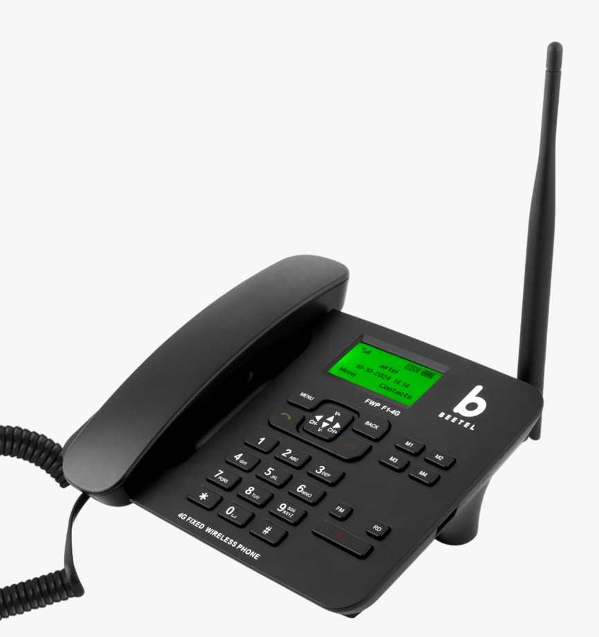

ELWOIC — Elamkulam Local Weather Observation And Information Centre — sincerely thanks Beetel for their support and assistance. The Beetel F1 4G communication device is now operational as part of the ELWOIC weather observation and alert communication infrastructure.
ELWOIC (Elamkulam Local Weather Observation And Information Centre) is an independent local weather observation and forecasting initiative focused on monitoring atmospheric conditions, severe weather activity, rainfall patterns, and public weather communication.
The system uses weather sensors, forecasting engines, atmospheric analysis methods, and communication infrastructure to monitor rapidly changing weather conditions and provide local weather awareness.
The Beetel F1 4G is a fixed wireless 4G VoLTE communication device designed for stable voice communication and reliable connectivity.
The device is currently being used as part of the ELWOIC communication and weather alert system.
During heavy rain, thunderstorms, power fluctuations, and severe weather conditions, reliable communication becomes extremely important.
The Beetel F1 4G helps provide dependable communication capability for weather-related coordination, public contact support, and operational continuity.
ELWOIC sincerely thanks the Beetel team for their support, communication, and assistance.
Their support and encouragement toward independent weather observation efforts are deeply appreciated.
The photos and materials shared by the Beetel team made this acknowledgement page possible.

The Beetel F1 4G now forms a part of the ELWOIC operational communication setup.
For weather-related information, alerts, operational communication, or public enquiries:
Calls may be attended directly or forwarded through the ELWOIC communication system.